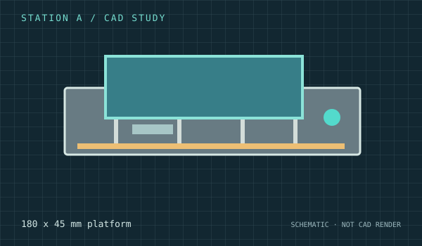
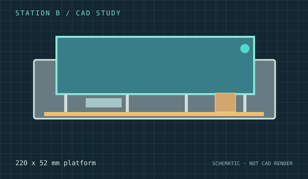
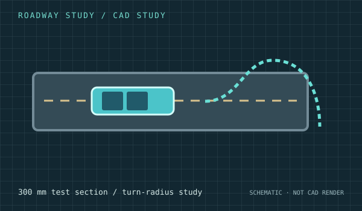

ENGINEERING / FREECAD
From CAD code to
visible infrastructure.
Explore the infrastructure concepts behind TransitOps-M. The preview images are illustrative 2D schematics based on the design studies—not exports of finished FreeCAD geometry. Open the source macros to inspect and generate the editable CAD models.
CAD / CURRENT STUDIES
Stations, roads
and the depot.

CAD STUDY · 220 × 52 mm
Station B
Expanded platform, shelter and ticket kiosk concept
Open FreeCAD macro ↗
CAD STUDY · 2 active bays + 3 staging spaces
Depot B
Preliminary drive-through service bay and staging arrangement
Open FreeCAD macro ↗
CAD STUDY · 300 mm straight test road
Roadway Study
Guidance, clearance, and conceptual turning geometry
Open FreeCAD macro ↗ENGINEERING STATUS
FreeCAD macros define editable conceptual geometry. Fitment, turning clearance, active bay access and manufacturing readiness are not yet validated. These previews should not be interpreted as construction drawings.
HOW TO VIEW THE REAL 3D GEOMETRY
Run the macros
in FreeCAD.
Download any .FCMacro file using the source link, open FreeCAD, then select Macro → Macros → execute. Save the resulting document as .FCStd. We can add actual model screenshots here once they have been exported.